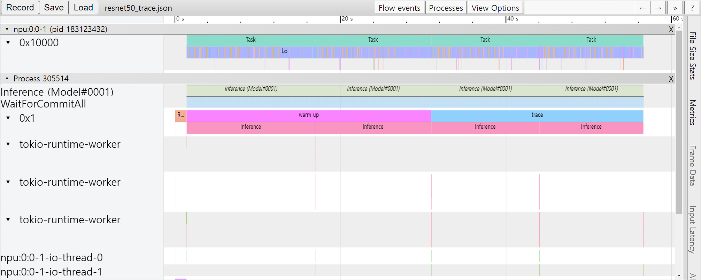

성능 프로파일링
많은 DNN 응용에서 낮은 지연시간과 높은 처리 성능은 중요한 요소이다. 성능 최적화를 위해서는 모델 개발자나 ML 엔지니어가 모델의 성능을 이해하고 병목지점을 분석할 수 있어야 한다. 이를 위해 FuriosaAI SDK는 프로파일링 도구를 제공한다.
트레이스 분석 (Trace Analysis)
트레이스 분석은 모델의 추론 작업을 실제로 실행 시키고 측정한 구간 별 실행 시간을 구조적 데이터(structured)로 제공한다. 또한 데이터를 크롬 웹브라우져(Chrome Web Browser)의 Trace Event Profiling Tool 기능을 이용해 시각화 할 수 있다.
트레이스 생성은 구간 별 시간을 측정하고 파일로 결과를 쓰기 때문에 작지만 실행 시간 오버헤드를 유발한다. 따라서 기본 설정으로는 활성화 되어 있지 않으며 아래 두 가지 방법을 통해 트레이스를 생성할 수 있다.
환경 변수를 통한 트레이스
FURIOSA_PROFILER_OUTPUT_PATH 에 트레이스 결과가 쓰여질 파일의 경로를 설정 하면
트레이스 생성을 활성화 할 수 있다. 이 방법은 작성된 코드를 전혀 변경하지 않고
트레이스를 활성화할 수 있다는 장점이 있다. 반면, 측정하기 윈하는 구간이나 측정 연산의 카테고리를 더 세밀하게 설정 할 수 없다는
한계가 있다.
git clone https://github.com/furiosa-ai/furiosa-sdk
cd furiosa-sdk/examples/inferences
export FURIOSA_PROFILER_OUTPUT_PATH=`pwd`/tracing.json
./image_classify.py ../assets/images/car.jpg
ls -l ./tracing.json
-rw-r--r-- 1 furiosa furiosa 456493 Jul 27 17:56 ./tracing.json
위와 같이 환경변수를 통해 설정하면 환경변수 값에 설정된 경로에 JSON 파일이 쓰여진다.
크롬 브라우져에서 주소창에서 chrome://tracing 주소를 입력하면 트레이스 뷰어가
시작된다. 트레이스 뷰어에서 왼쪽 상단에 Load 버튼을 누르고 저장된 파일 (위의 예에서는 tracing.json)
파일을 선택하면 트레이스 결과를 볼 수 있다.

프로파일러 컨텍스트를 이용한 트레이스
Python 코드에서 프로파일러 컨텍스트(Profiler Context)를 정의하는 것으로도 트레이스 생성을 활성화할 수 있다. 이 방법은 환경 변수를 통한 트레이스 활성화 방법과 비교하여 다음과 같은 장점을 가진다.
Python 인터프리터 또는 Jupyter Notebook와 같은 인터렉티브한 환경에서 바로 트레이스를 활성화 할 수 있다.
실행 구간에 레이블을 붙일 수 있다.
원하는 연산 카테고리를 선택하여 측정할 수 있다.
#!/usr/bin/env python
import numpy as np
from furiosa.runtime.profiler import profile
from furiosa.runtime.sync import create_runner
# You can find 'examples' directory of the root of furiosa-sdk source tree
model_path = "examples/assets/quantized_models/imagenet_224x224_mobilenet_v1_uint8_quantization-aware-trained_dm_1.0_without_softmax.tflite"
with open("mobilenet_v1_trace.json", "w") as output:
with profile(file=output) as profiler:
with create_runner(model_path) as runner:
input_shape = runner.model.input(0).shape
with profiler.record("warm up") as record:
for _ in range(0, 2):
runner.run([np.uint8(np.random.rand(*input_shape))])
with profiler.record("trace") as record:
for _ in range(0, 2):
runner.run([np.uint8(np.random.rand(*input_shape))])
위는 프로파일링 컨텍스트를 활용한 코드 예제이다. 위 Python 코드가 실행되고 나면 mnist_trace.json 파일이 생성되며 트레이스 결과는 아래 그림과 같이 ‘warm up’과 ‘trace’ 레이블이 붙는다.
{kind=link}
프로파일러 컨텍스트의 일시적 중단/재개
장시간 실행되는 코드를 트레이스하는 것은 다음과 같은 문제점들을 야기할 수 있다.
트레이스 결과물 저장을 위해 많은 디스크 공간이 필요해지고, 결과물 공유가 어려워진다.
트레이스를 시각화했을 때 관찰하고자 하는 작업들을 식별하기 어려워지고, 별도로 데이터를 파싱 하는 등의 추가 작업이 필요하다.
트레이스 결과물 생성에 많은 시간이 소요된다.
이러한 문제를 해결하기 위해 컨텍스트 내에서 일시적으로 프로파일러를 중단/재개 할 수 있는 기능을 제공한다. 사용자는 프로파일링하기 원치 않는 작업들을 제외함으로써 불필요한 오버헤드를 최소할 수 있다.
아래는 프로파일러 중단/재개 기능을 사용한 예제로 profile.pause 와 profile.resume 사이의 warm up 추론들에 대한 트레이스는 생성되지 않는다.
#!/usr/bin/env python
import numpy as np
from furiosa.runtime.profiler import RecordFormat, profile
from furiosa.runtime.sync import create_runner
# You can find 'examples' directory of the root of furiosa-sdk source tree
model_path = "examples/assets/quantized_models/imagenet_224x224_mobilenet_v1_uint8_quantization-aware-trained_dm_1.0_without_softmax.tflite"
with profile(format=RecordFormat.PandasDataFrame) as profiler:
with create_runner(model_path) as runner:
input_shape = runner.model.input(0).shape
# pause profiling during warmup
profiler.pause()
for _ in range(0, 10):
with profiler.record("warm up") as record:
runner.run([np.uint8(np.random.rand(*input_shape))])
# resume profiling
profiler.resume()
with profiler.record("trace") as record:
runner.run([np.uint8(np.random.rand(*input_shape))])
df = profiler.get_pandas_dataframe()
assert len(df[df["name"] == "trace"]) == 1
assert len(df[df["name"] == "warm up"]) == 0
Pandas DataFrame을 이용한 트레이스 분석
측정한 트레이싱 데이터를 Chrome Trace Format으로 출력하여 시각화 하는 방법 외에도 데이터 분석에 많이 사용되는 Pandas의 DataFrame으로 표현하고 사용할 수 있다. 이 방법은 Chrome Trace Format과 비교하여 다음과 같은 장점을 가진다.
Python Interpreter 또는 Jupyter Notebook 등의 interactive shell에서 바로 사용할 수 있다.
기본적으로 제공되는 reporting 함수 외에도 사용자가 직접 DataFrame에 접근하여 분석 작업을 수행할 수 있다.
#!/usr/bin/env python
import numpy as np
from furiosa.runtime.profiler import RecordFormat, profile
from furiosa.runtime.sync import create_runner
# You can find 'examples' directory of the root of furiosa-sdk source tree
model_path = "examples/assets/quantized_models/imagenet_224x224_mobilenet_v1_uint8_quantization-aware-trained_dm_1.0_without_softmax.tflite"
with profile(format=RecordFormat.PandasDataFrame) as profiler:
with create_runner(model_path) as runner:
input_shape = runner.model.input(0).shape
with profiler.record("warm up") as record:
for _ in range(0, 2):
runner.run([np.uint8(np.random.rand(*input_shape))])
with profiler.record("trace") as record:
for _ in range(0, 2):
runner.run([np.uint8(np.random.rand(*input_shape))])
profiler.print_summary() # (1)
profiler.print_inferences() # (2)
profiler.print_npu_executions() # (3)
profiler.print_npu_operators() # (4)
profiler.print_external_operators() # (5)
df = profiler.get_pandas_dataframe() # (6)
print(df[df["name"] == "trace"][["trace_id", "name", "thread.id", "dur"]])
위는 프로파일링 컨텍스트의 형식을 PandasDataFrame으로 지정한 코드 예제이다.
(1) 라인이 실행되면 아래와 같이 수행 결과의 요약 정보가 출력된다.
================================================
Inference Results Summary
================================================
Inference counts : 4
Min latency (ns) : 1584494
Max latency (ns) : 3027309
Mean latency (ns) : 2136984
Median latency (ns) : 1968066
90.0 percentile Latency (ns) : 2752525
95.0 percentile Latency (ns) : 2889917
97.0 percentile Latency (ns) : 2944874
99.0 percentile Latency (ns) : 2999831
99.9 percentile Latency (ns) : 3024561
(2) 라인이 실행되면 아래와 같이 하나의 추론 요청 단위로 소요된 시간 정보가 출력된다.
┌──────────────────────────────────┬──────────────────┬───────────┬─────────┐
│ trace_id ┆ span_id ┆ thread.id ┆ dur │
╞══════════════════════════════════╪══════════════════╪═══════════╪═════════╡
│ 7cf3d3b7439cf4c3fac1a47998783102 ┆ 403ada67f1d8220e ┆ 1 ┆ 3027309 │
│ 16d65f6f8f1db256d0f39953855dea72 ┆ 78b065c19c3675ef ┆ 1 ┆ 2111363 │
│ d0534e3a9f19edadab81954ad28ab44f ┆ 9a7addaf0f28c9fe ┆ 1 ┆ 1824769 │
│ 70512188522f45b87cfe4f545de3cf2c ┆ c75f697f8e72d333 ┆ 1 ┆ 1584494 │
└──────────────────────────────────┴──────────────────┴───────────┴─────────┘
(3) 라인이 실행되면 아래와 같이 NPU의 Execution 단위로 소요된 시간 정보가 출력된다.
┌──────────────────────────────────┬──────────────────┬──────────┬─────────────────┬───────────┬─────────┬──────────────────────┐
│ trace_id ┆ span_id ┆ pe_index ┆ execution_index ┆ NPU Total ┆ NPU Run ┆ NPU IoWait │
╞══════════════════════════════════╪══════════════════╪══════════╪═════════════════╪═══════════╪═════════╪══════════════════════╡
│ 8f6fce6c0e52b4735cae3379732a0943 ┆ 3e1e4a76523cbf89 ┆ 0 ┆ 0 ┆ 119145 ┆ 108134 ┆ 18446744073709540605 │
│ 195366613b1da9b0350c0a3c2a608f42 ┆ 07dff2e92172fabd ┆ 0 ┆ 0 ┆ 119363 ┆ 108134 ┆ 18446744073709540387 │
│ 3b65b8fa3eabfaf8f815ec9f41fcc7d9 ┆ 639a366a7f932a23 ┆ 0 ┆ 0 ┆ 119157 ┆ 108134 ┆ 18446744073709540593 │
│ e48825df32a07e5559f7f50048c08e1f ┆ ecaab4915bfda725 ┆ 0 ┆ 0 ┆ 119219 ┆ 108134 ┆ 18446744073709540531 │
└──────────────────────────────────┴──────────────────┴──────────┴─────────────────┴───────────┴─────────┴──────────────────────┘
(4) 라인이 실행되면 아래와 같이 연산자(Operator) 단위로 소요된 시간 정보가 출력된다.
┌─────────────────────────┬──────────────────────┬───────┐
│ name ┆ average_elapsed (ns) ┆ count │
╞═════════════════════════╪══════════════════════╪═══════╡
│ LowLevelConv2d ┆ 5327.8 ┆ 60 │
│ LowLevelDepthwiseConv2d ┆ 1412.285714 ┆ 56 │
│ LowLevelPad ┆ 575.785714 ┆ 56 │
│ LowLevelTranspose ┆ 250.0 ┆ 4 │
│ LowLevelReshape ┆ 2.0 ┆ 240 │
│ LowLevelSlice ┆ 2.0 ┆ 12 │
│ LowLevelExpand ┆ 2.0 ┆ 16 │
└─────────────────────────┴──────────────────────┴───────┘
(5) 라인이 실행되면 아래와 같이 CPU에서 실행된 연산자(Operator) 들에서 소요된 시간 정보가 출력된다.
┌──────────────────────────────────┬──────────────────┬───────────┬────────────┬────────────────┬────────┐
│ trace_id ┆ span_id ┆ thread.id ┆ name ┆ operator_index ┆ dur │
╞══════════════════════════════════╪══════════════════╪═══════════╪════════════╪════════════════╪════════╡
│ e7ab6656cc090a8d05992a9e4683b8b7 ┆ 206a1d6f351ca4b1 ┆ 40 ┆ Quantize ┆ 0 ┆ 136285 │
│ 03636fd6c7dbc42f0a9dd29a7283d3fc ┆ f636740983e095a6 ┆ 40 ┆ Lower ┆ 1 ┆ 133350 │
│ c9a0858f7e0885a976f51c6cb57d3e0f ┆ bb6c84f88e453055 ┆ 40 ┆ Unlower ┆ 2 ┆ 44775 │
│ 8777c67ad9fe597139bbd6970362c2fc ┆ 63bac982c7b98aba ┆ 40 ┆ Dequantize ┆ 3 ┆ 14682 │
│ 98aeba2a25b0525166b6a4065ab01774 ┆ 34ccd560571d733f ┆ 40 ┆ Quantize ┆ 0 ┆ 45465 │
│ 420525dc13ba9624083e0a276f7ee718 ┆ 9f6d342da5eb86bc ┆ 40 ┆ Lower ┆ 1 ┆ 152748 │
│ cb67393f6949bbbb396053c1e00931ff ┆ 2d724fa6ab8ca024 ┆ 40 ┆ Unlower ┆ 2 ┆ 67140 │
│ 00424b4f02039ae0ca98388a964062b0 ┆ a5fb9fbd5bffe6a6 ┆ 40 ┆ Dequantize ┆ 3 ┆ 32388 │
│ d7412c59d360067e8b7a2508a30d1079 ┆ 8e426d778fa95722 ┆ 40 ┆ Quantize ┆ 0 ┆ 71736 │
│ 6820acf9345c5b373c512f6cd5edcbc7 ┆ 2d787c2df381f010 ┆ 40 ┆ Lower ┆ 1 ┆ 311310 │
│ 84d24b02a95c63c3e40f7682384749e4 ┆ 1236a974a619ff1a ┆ 40 ┆ Unlower ┆ 2 ┆ 51930 │
│ 8d25dff1cfd6624509cbf95503e93382 ┆ 673efb3bfb8deac6 ┆ 40 ┆ Dequantize ┆ 3 ┆ 12362 │
│ 4cc60ec1eee7d9f3cdd290d07b303a18 ┆ e7903b0a584d6388 ┆ 40 ┆ Quantize ┆ 0 ┆ 56736 │
│ c5f04d9fea26e5b52c6ec5e5406775fc ┆ 701118dabd065e6f ┆ 40 ┆ Lower ┆ 1 ┆ 265447 │
│ c5fdfb9cf454da130148e8e364eeee93 ┆ 5cf3750def19c6e8 ┆ 40 ┆ Unlower ┆ 2 ┆ 35869 │
│ e1e650d23061140404915f1df36daf9c ┆ ddd76ff19b5cd713 ┆ 40 ┆ Dequantize ┆ 3 ┆ 14688 │
└──────────────────────────────────┴──────────────────┴───────────┴────────────┴────────────────┴────────┘
(6) 라인을 실행하면 코드에서 DataFrame에 접근하고 사용자가 직접 분석할 수 있다.
trace_id name thread.id dur
487 f3b158734e3684f2e043ed41309c4c2d trace 1 11204385